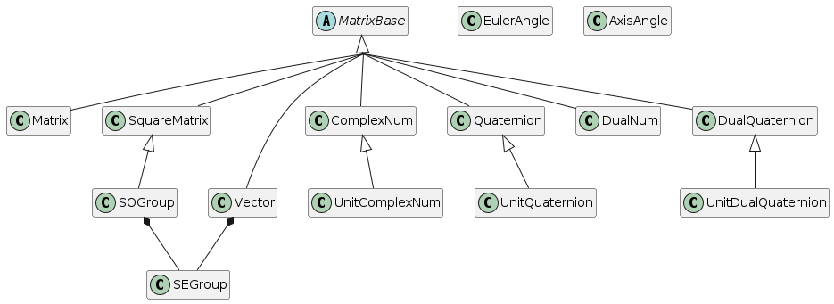

translotator¶
Lightweight C++ header-only template library for translation, rotation and homogeneous transformation.
Requires C++17 or Later. No dependencies with other libraries and stl.
Features¶
- Translation, Rotation, Homogeneous Transformation
- Matrix based objects : Matrix N x M, SquareMatrix N x N, Vector N
- Number objects : Complex number, Quaternion, Dual number, Dual Quaternion
- Rotation objects : Unit Complex Number, Unit Quaternion, Axis Angle, Euler Angle, SO(2), SO(3)
- Transformation objects : SE(2), SE(3), UnitDualQuaternion
- Supports variaous types of data (float, double, long double)
- Many operator overloadings for object actions & data type conversion
- Supports reinterpret_cast for zero-copy data type conversion between Matrix-based objects.(using this feature to convert temporary object is not recommended)
- Complile-time dimension check for matrix-based objects
- Basic Lie algebra & operation supported : S1, S3, SO(2), SO(3), SE(2), SE(3). Exponential map, Logarithm map.
- Interpolation : Lerp, Slerp, ScLerp. Also Slerp x Lerp for SE(2), SE(3)
Matrix-based objects¶
These objects are based on Matrix form.
- Matrix (N x M)
- SquareMatrix (N x N)
- Vector (N x 1)
- ComplexNum(2 x 1)
- Quaternion(4 x 1)
- DualNumber(2 x 1)
- DualQuaternion(8 x 1)
- UnitComplexNum (2 x 1)
- UnitQuaternion (4 x 1)
- UnitDualQuaternion (8 x 1)
- Special Orthogonal Group SO(2), SO(3)
Except SE(2), SE(3), EulerAngle, AxisAngle, all objects are based on Matrix form.
Matrix-based objects has many operator overloadings between them.
1. Copy & Zero-copy data type conversion¶
All matrix-based objects can be converted to each other by using cast function. There are two type of cast function, castContainer() and castContainerRef(). These functions are used for copy and zero-copy data type conversion respectively. Also only allowes the conversion between objects with same matrix-based dimension.
castContainer() Returns new object with memory copy. Usually used for converting temporary object. Or when you want to keep the original object memory. Some cast functions perform extra steps like normalize, transpose, etc.
All matrix dimension checks are performed at complile time. If the dimension is not matched, it will cause compile error.
Matrix<3,3,float> mat33;
SquareMatrix<3,float> sqmat33_a = mat33.castContainer<SquareMatrix<3,float>>();
SquareMAtrix<3,float> sqmat33_b = mat33.cast2SquareMatrix(); // alias
Matrix<3,1,float> mat31;
Vector<3, float> v31_a = mat31.castContainer<Vector<3,float>>();
Vector<3, float> v31_b = mat31.cast2Vector(); // alias
some alias functions do extra steps
Quaternion<float> quat = Quaternion<float>{1.f, Vector<3,float>{{2.f, 3.f, 4.f}}};
// cast the object type and normalize
UnitQuaternion<float> uquat_a = quat.cast2UnitQuaternion();
// just cast the object type without normalization.
UnitQuaternion<float>uquat_b = quat.castContainer<UnitQuaternion<float>>();
// usually cast2UnitQuaternion() is recommended.
castContainerRef() returns reinterpret_casted object. It is used for zero-copy data type conversion. This is recommended to use when you want to convert the object type without memory copy. Take extra care for temporary objects, can cause undefined behavior, the dangling reference.
Matrix<3,3,float> mat33{{1.f, 2.f, 3.f,
3.f ,4.f, 5.f,
5.f, 6.f, 7.f}};
// zero-copy type conversion
const SquareMatrix<3, float>& sqmat33_ref_a = mat33.castContainerRef<SquareMatrix<3,float>>();
// alias
SquareMatrix<3,float>& sqmat33_ref_b = mat33.cast2SquareMatrixRef();
// can only read from mat33(0,0), will be 1.f
float val00 = sqmat33_ref_a(0,0);
// mat33(0,0) also changed to 0.f
sqmat33_ref_b(0,0) = 0.f;
// reference of temporary object can lead to undefined behavior.
SquareMatrix<3, float>& sqmat33_doomed = (mat33 * mat33).cast2SquareMatrixRef();
sqmat33_doomed(0,0) = 0.f; // undefined behavior
Some alias functions do extra steps, changing the data inside original object.
Quaternion<float> quat = Quaternion<float>{1.f, Vector<3,float>{{2.f, 3.f, 4.f}}};
// cast the object type and normalize
const UnitQuaternion<float>& uquat_ref_a = quat.cast2UnitQuaternionRef();
float norm1 = uquat_ref_a.norm(); // 1.f
float norm2 = quat.norm(); // 1.f , original object is also normalized
2. operator+ and operator-¶
The operator+, operator- are defined only between same dimension objects.
Return type of operator+ and operator- usually follows the left operand type.
If operation result violates the property of left operand object, it will be converted to the superset object.
(e.g. UnitComplexNum + ComplexNum -> ComplexNum)
(e.g. SO(3) + GL(3) =GL(3) )
3. operator*, operator/*=¶
The operator* are basically defined only between proper matrix dimension objects.
Return type of operator*follows the rules of matrix multiplication.
If operation result has specific form, it will be converted to the subset object.
(e.g. (2x4)*(4x3) = Matrix(2x3) )
(e.g. (2x3)*(3x2) = SquareMatrix(2x2) )
(e.g. (2x5)*(5x1) = Vector(2x1) )
(e.g. SO(3)* Scalar = SquareMatrix(3x3) )
4. operator\/, operator\/=¶
The operator/ are defined only between some mathmatical inverse operation objects.
(e.g. ComplexNum/ComplexNum = ComplexNum * ComplexNum.inverse() )
(e.g. SO(3) / SO(3) = SO(3) * SO(3)^T )
(e.g. SO(3) / Scalar = SquareMatrix(3x3) )
Hierachy of All objects¶

License¶
This project is licensed under the MIT License - see the LICENSE file for details
Contact¶
lightAxis - jisuk500@gmail.com